Which sessions
captured attention?
Go beyond headcounts to understand which moments held the room — and where attention shifted.
Great events bring people together. Cinteraction reveals what truly connects them — turning audience engagement into insights you can act on.
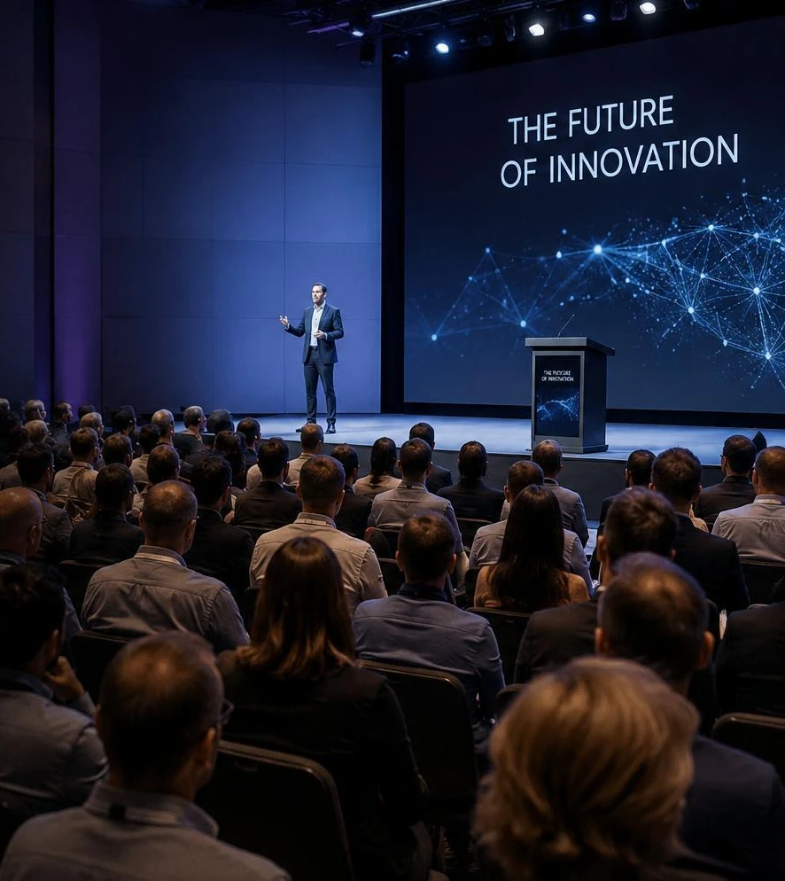
Attendance tells you who showed up. Registrations tell you who signed up. Surveys tell you what they said. But did your audience actually engage with the content?
Go beyond headcounts to understand which moments held the room — and where attention shifted.
See how people respond to content, so speaker performance has more than applause behind it.
Replace guesswork with objective audience insights that inform your next programme.
Your event deserves more than outdated metrics.Understand the experience behind the numbers. ↗
Cinteraction uses AI-powered video analysis to measure attention and engagement. See what resonates as it happens, and use that evidence to improve what comes next.
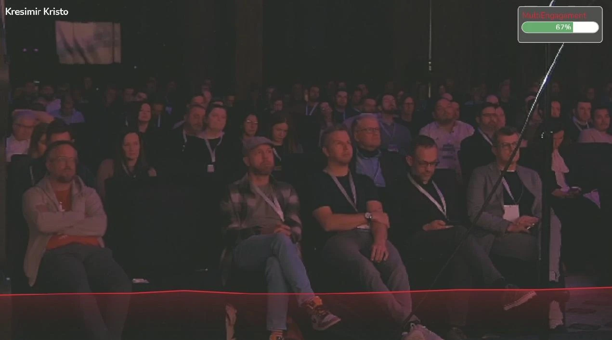
Analyse audience behaviour during keynotes, panels and presentations, with attention tracking in real time.
Explore engagement over time to identify the content and speakers that connect with your audience.
Turn objective insights into stronger programmes, improved speaker delivery and evidence of sponsor impact.
Move from a single attendance number to a timeline of audience engagement. Identify strong moments and understand how attention changes throughout a session.
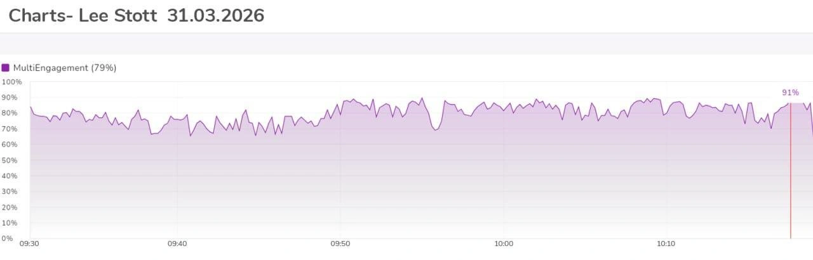
Different roles. One shared goal: events that make a greater impact. Give everyone the insights they need to improve the experience.
Explore example reports for organisers, speakers and sponsors. From engagement timelines to actionable recommendations, see how audience data becomes a clearer picture of event impact.
Understand what worked across the event. Compare sessions, explore format and topic performance, and plan a better programme.
See how the audience responded. Find your strongest moments, identify attention drops and explore recommendations for your next talk.
See the impact of your sponsored session. Explore engagement, audience retention and performance alongside other sessions.
Successfully deployed and validated at conferences, summits and events — from investor pitches to international hybrid sessions.
Audience engagement across keynotes, panels and workshops.
200+ ATTENDEESReal-time attention tracking for presentations and panels with marketing professionals.
150+ ATTENDEESFour days of sessions, including keynotes, pitches and panels.
500+ ATTENDEESSpeaker performance and audience attention in AI-focused sessions.
100+ ATTENDEESAudience insights during investor pitches and startup presentations.
120+ ATTENDEESHybrid sessions with international participants and live engagement analytics.
300+ ATTENDEESAttention and engagement tracking across keynotes and panel discussions.
180+ ATTENDEESAudience intelligence for sessions with startups, investors and tech leaders.
1,000+ ATTENDEESA team bringing together AI, engineering, design and business expertise to make the future of events measurable.
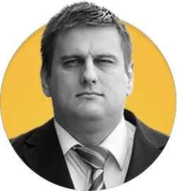
Founder · CTO
Founder · CSO
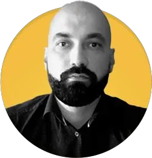
CEO
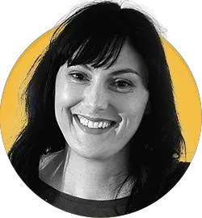
CMO
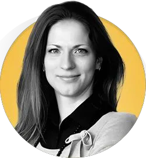
Investment Manager
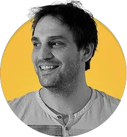
Developer
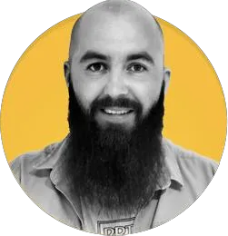
AI Engineer
AI Engineer
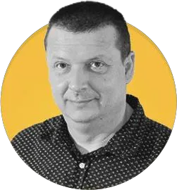
Developer
Developer
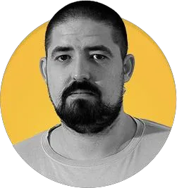
Developer
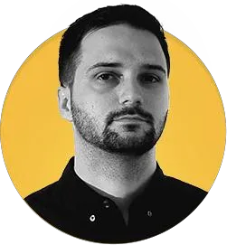
Designer
Discover what truly engages your audience. Explore Cinteraction or talk to our team about your next event.
Explore the Demo